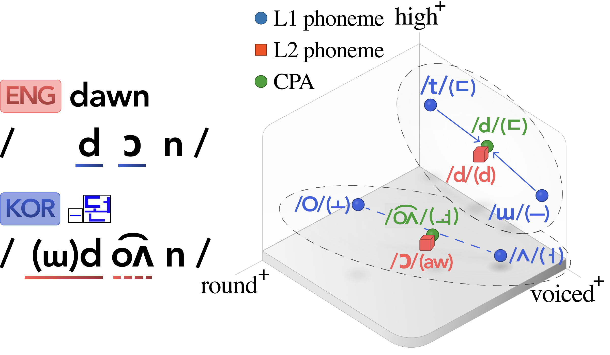
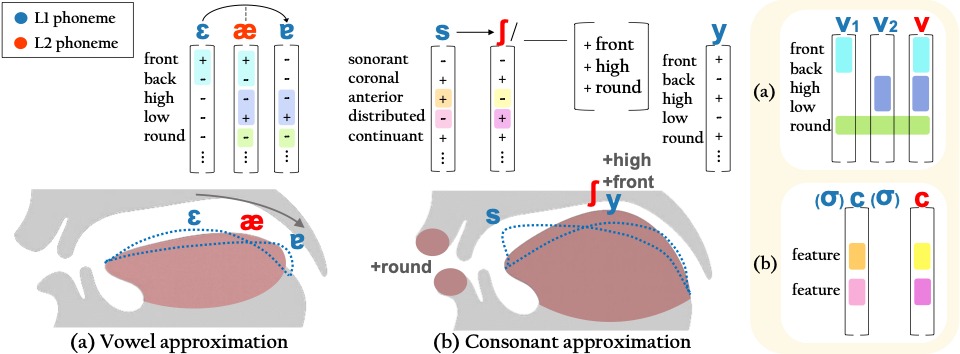

Compositional Phoneme Approximation
for L1-Grounded L2 Pronunciation Training
Abstract
Learners of a second language (L2) often map non-native phonemes to similar native-language (L1) phonemes, making conventional L2-focused training slow and effortful. To address this, we propose an L1-grounded pronunciation training method based on compositional phoneme approximation (CPA), a feature-based representation technique that approximates L2 sounds with sequences of L1 phonemes. Evaluations with 20 Korean non-native English speakers show that CPA-based training achieves a 76% in-box formant rate in acoustic analysis, 17.6% relative improvement in phoneme recognition accuracy, and over 80% of speech being rated as more native-like, with minimal training.
Method
(a) An L2 vowel is approximated by combining two L1 vowels whose features jointly mirror the phonological identity of the target vowel.
(b) An L2 consonant is approximated by inserting one or two L1 segments, forming allophones that more closely match the phonological features of the target consonant.
Experimental Setup
We selected 18 English words containing phonemes absent from the Korean phonemic inventory as shown in Table 5. We recruited 20 native Korean speakers and presented three types of visual cues: (1) the English word alone (ENG), (2) the English word and its Hangul transcription (KOR), and (3) the English word with a CPA-based Korean grapheme (CPA). In each condition, participants read each word aloud three times (nine total).
Participants
F · O · S (pseudonyms)
Each button plays a single repetition (1–3) of the same word under the selected cue.
Results
Acoustic-Level Evaluation

Top: Distributions of speaker productions across conditions (ENG, KOR, CPA), with in-box rates (%). Red boxes show target F1–F2 regions; gray trapezoids indicate canonical vowel space. Bottom: CPA productions shown with spectrograms and smoothed F1 (red) and F2 (blue) trajectories. Shaded bands indicate target formant ranges; arrows show intended transitions.
Phoneme-Level Evaluation
| Target | KOR Approx. | CPA Approx. | KOR (%) | ENG (%) | CPA (%) |
|---|---|---|---|---|---|
| /ɒ/ | /o/ | /o/ + /ø/ | 4.8 | 10.4 | 10.9 |
| /æ/ | /e/ | /ɛ/ + /ɤ/ | 0.7 | 7.4 | 14.5 |
| /ə/ | /ʌ/ | /ɨ/ + /ø/ | 11.0 | 39.3 | 46.0 |
| /b/* | /p/ | /ɨ/ + /p/ | 9.2 | 57.5 | 73.3 |
| /d/* | /t/ | /ɨ/ + /t/ | 41.9 | 63.9 | 78.1 |
| /g/* | /k/ | /ɨ/ + /k/ | 16.7 | 45.8 | 72.5 |
| /dʒ/* | /tɕ/ | /ɨ/ + /tɕ/ + /y/ | 5.8 | 33.3 | 64.2 |
| /l/* | /ɾ/ | /ɨl/ + /ɾ/ | 91.7 | 96.7 | 99.2 |
| /m/* | /mᵇ/ | /ɨm/ + /mᵇ/ | 93.9 | 98.3 | 98.3 |
| /n/* | /nᵈ/ | /ɨn/ + /nᵈ/ | 95.8 | 99.2 | 100.0 |
| /ʃ/ | /ɕ/ | /s/ + /y/ | 60.0 | 77.0 | 87.0 |
| /tʃ/ | /tɕʰ/ | /tɕʰ/ + /y/ | 71.7 | 73.3 | 83.3 |
| /dʒ/ | /dʑ/ | /dʑ/ + /y/ | 42.5 | 25.0 | 25.0 |
| Weighted Average | 31.1 | 45.4 | 53.4 | ||
ASR-based phoneme recognition accuracy for each target English phoneme absent from Korean. Asterisks (*) denote word-initial consonants.
Word-Level Evaluation

LLM-based word-level nativeness comparison: (a) CPA vs. ENG and (b) CPA vs. KOR. Each cell summarizes the CPA win rate (%) from 18 pairwise comparisons per word and participant. Bars show average win rates across words and participants.
Acknowledgements
The views expressed in this work are solely those of the authors and do not reflect those of their past or present affiliations. This research was conducted independently of any institutional or corporate association. We thank Professor Jieun Song of Korea Advanced Institute of Science and Technology (KAIST) and Professor Ho Young Lee of Seoul National University for invaluable consultation and guidance in linguistics.
Citation
@misc{park2025compositionalphonemeapproximationl1grounded,
title = {Compositional Phoneme Approximation for L1-Grounded L2 Pronunciation Training},
author = {Jisang Park and Minu Kim and DaYoung Hong and Jongha Lee},
year = {2025},
eprint = {2411.10927},
archivePrefix = {arXiv},
primaryClass = {cs.CL},
url = {https://arxiv.org/abs/2411.10927}
}